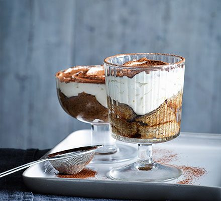

Tiramisu

Description
Tiramisu is a classic Italian dessert made with coffee, mascarpone and lady fingers.
Ingredients
- 3 tsp instant coffee granules
- 3 tbsp coffee liqueur
- 250g tub mascarpone
- 85g condensed milk
- 1 tsp vanilla extract
- 4-6 sponge fingers
- 1 tbsp cocoa powder
Steps
- Mix the coffee granules with 2 tbsp boiling water in a large jug and stir to combine.
- Add the coffee liqueur and 75ml cold water and pour into a shallow dish and set aside.
- Make the cream layer by beating the mascarpone, condensed milk and vanilla extract with an electric whisk until thick and smooth.
- Break the sponge fingers into two or three pieces and soak in the coffee mixture for a few seconds.
- Put a few bits of the sponge in the bottom of two wine or sundae glasses and top with the cream.
- Sift over the cocoa and chill in the fridge for at least 1 hour before serving.